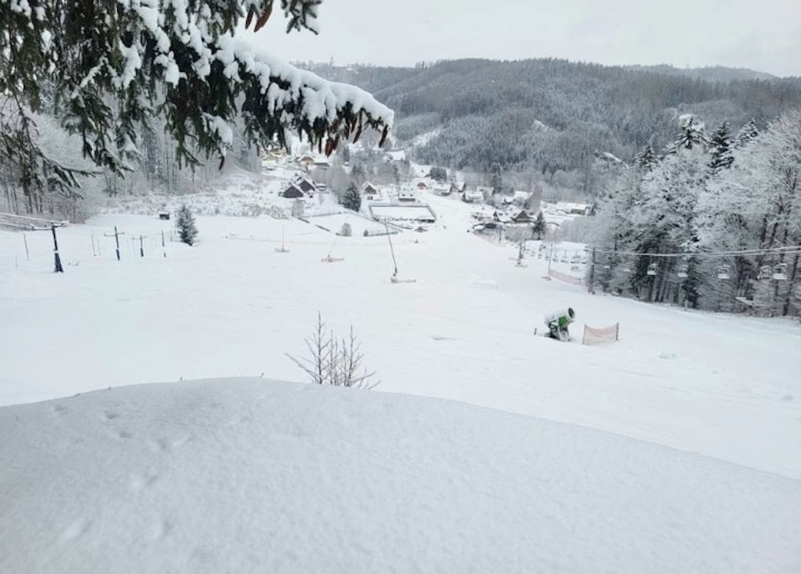

Pohádková vesnička
Domečky, rozcestník a hravé prvky přímo u chalupy. Ideální na krátké zastavení během dne.

Vedle chalupy je sportovní areál, pohádková vesnička a v okolí výlety, které zvládnete s dětmi i větší partou.
Klouzačky, houpačky, kuželky, hračky, trampolína a pohádkové domečky tvoří zázemí, které rodiny ocení bez plánování dlouhých přesunů.

Vyberte si klidný program u chalupy, kratší výlet v okolí nebo zážitek pro horší počasí.
Domečky, rozcestník a hravé prvky přímo u chalupy. Ideální na krátké zastavení během dne.
Houpačky, klouzačky, kuželky, hračky a prostor, kde se děti zabaví blízko dospělých.
Lehčí trasy po Prkenném Dole a Žacléři, vhodné i pro rodiny s menšími dětmi.
Lyže, bobování, sáňky a běžky podle věku dětí a aktuálních sněhových podmínek.
Pevnost, rozhledna a výletní cíle, které se dobře kombinují s kratším rodinným výšlapem.
Praktická varianta na deštivý den nebo odpočinkový program po horských výletech.
Ski areál Bret je vedle chalupy. Ski areál Arakis je přibližně 300 m od chalupy a nabízí sjezdovky různých obtížností.
Od horní stanice lanovky se dá napojit na krkonošskou magistrálu nebo vyrazit k Rýchorské boudě a zpět do Žacléře.
V létě jsou k dispozici cyklotrasy Žacléřskem. Oblíbené cíle jsou Rýchorský prales, Stachelberg a rozhledna Eliška.

Prkenný Důl patří k Žacléři, kde najdete standardní služby, muzeum i další volnočasové možnosti. Do okolí se dá vyrážet autem i pěšky.
V zimě lyže a běžky, v létě výlety, kolo a večery u grilu.